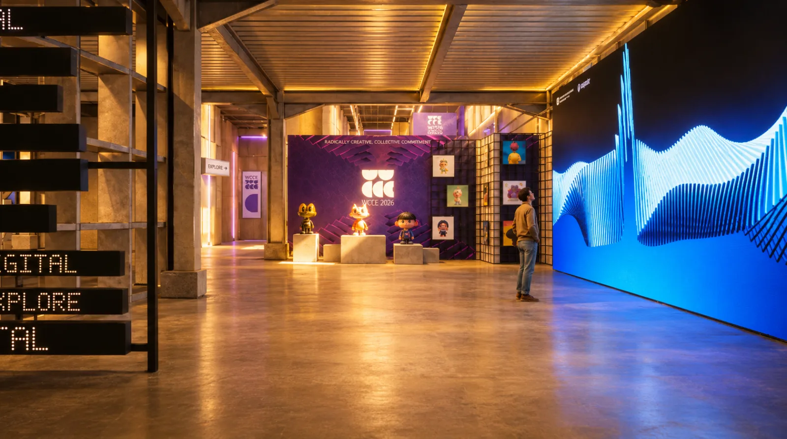

Phase 1
It follows you
Walk past or stand still. The stacking key visual rises with your body and movement.
Retrux × WCCE 2026 · Interactive installation
Say hello to the Realm
An interactive LED installation by Retrux for WCCE 2026, the 5th World Conference on Creative Economy. Free for every visitor.

No app, no gestures. Just walk or stand.

A camera follows where you are and how you move.

The 3D key visual lifts and turns with your body, live.
The idea behind it
An immersive interaction anyone gets at once. No hands to wave, no rules to learn. You just walk.
WCCE already had a strong visual world. We turned its stacking 3D key visual into a living installation.
One that follows every visitor, and one that only a crowd can unlock.


How it plays
Walk past or stand still. The stacking key visual rises with your body and movement.

When enough people gather, a finale plays and lands on the WCCE 2026 logo.

The wall settles and waits for whoever comes next.
Why it feels different
Most LED walls loop a video. This one waits, reads you and answers live.
No app, no controller, no gestures. Walking is enough.
Kids, delegates, first timers. No words on screen, so it speaks every language.
Inclusively Creative
Drawn the moment you move, so no two visits look the same.
Bring friends. Enough people at once triggers the finale and the WCCE 2026 logo.
Collective Continuity
Catch it at Kempinski, then again in SCBD.
Play the same field below, on your phone or laptop.
Where it comes from
WCCE 2026 stands on four pillars around the Human. This piece is built from Realm: stepping fully into another world.

Affirm · Direct · Decide

Welcome · Open · Listen
 You are here
You are hereExplore · Cross · Immerse

Celebrate · Ignite · Spread
Your turn
The installation’s field, on your screen. Move across it and the blades rise to meet you.
Come find it

The people behind it
Other